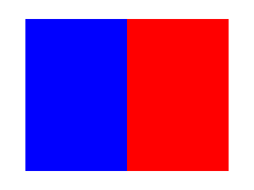
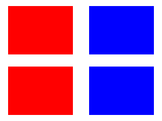
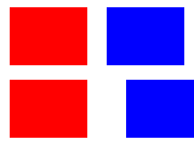
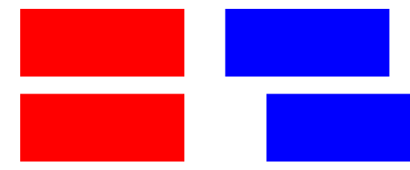
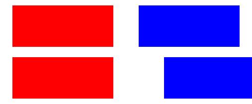
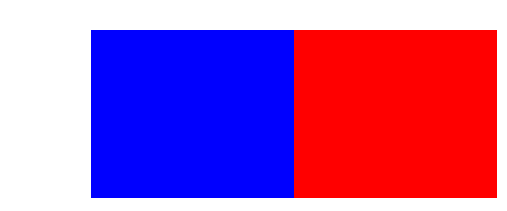
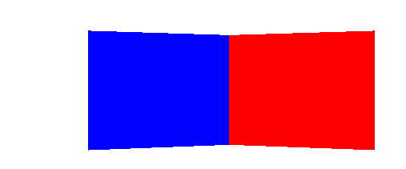
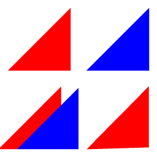
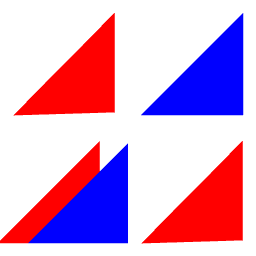

Surface composition: native proof
Candidate e2df2a9e83b9792b06837881aeab8ccd4f263d47. Geometry, picking, isolation, and resource checks passed. Full SurfViewJS display parity remains unqualified.
Evidence and limitations · Native metrics · Browser checks
crossing
JavaFX Reference raster
Reference raster
reversed
JavaFX Reference raster
Reference raster
panels
JavaFX
Reference raster
independent-camera
JavaFX
Reference raster
resized
JavaFX
Reference raster
translated
JavaFX Reference raster
Reference raster
perspective
JavaFXReference raster
after-rejected-resource
JavaFX Reference raster
Reference raster
Three.js independent camera
Before
After: upper-left camera changed